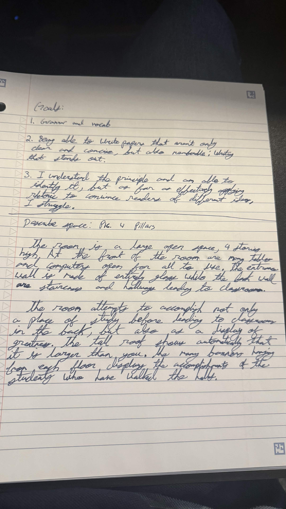
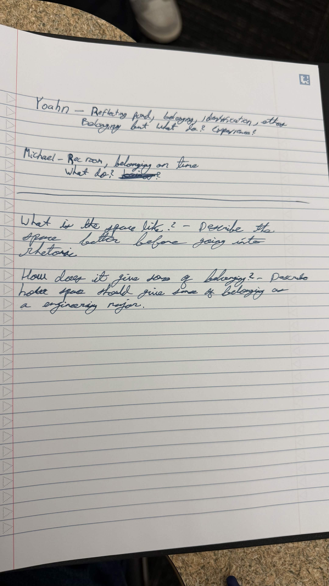
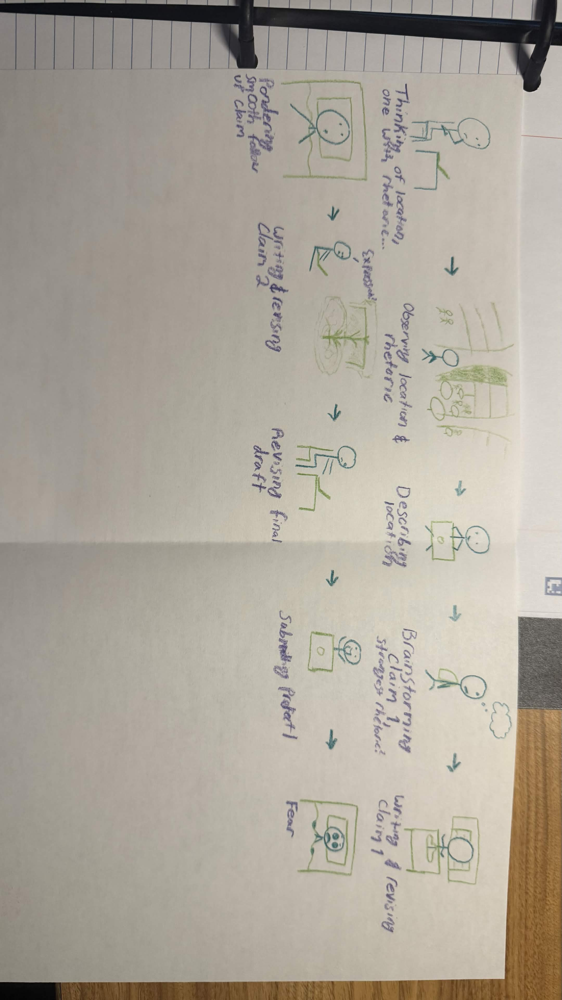
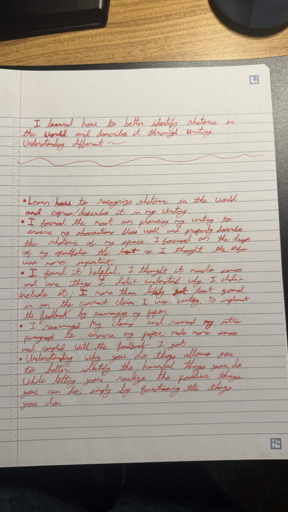

Project 1
I will walk you through how the documents achieve the following outcomes:
Multiple Literacies & Goal Setting. Students will be able to demonstrate how they marshal/leverage their multiple literacies (e.g. speaking, listening, reading, multilingual writing, translating, multimodality, etc.) to support their writing processes.
Decision Making & Production. Students will be able to produce writing that demonstrates their ability to navigate choices and constraints when writing for specific audiences, genres, and purposes.
Variation across Contexts. Students will be able to identify, analyze, and reflect on variation in rhetorical and linguistic patterns, including their own, from a range of contexts (e.g cultural, digital, workplace, and/or academic).
GOAL. This was my initial observation of the Engineering building 2's atrium. I choose this space because of the unique design and how the strong rhetoric. I was able to achieve my goal of recognizing the rhetoric in the space and put it into my writing by referencing Doug Downs and physically observing the space.
VARIATION. This was my data collection log which I used to pick my claims. I thought choosing my claims would be difficult but turned out to be quite easy by referencing my initial obersvations. The claims helped me analyze different rhetoric in the space I initially oberserved but didn't give much thought to.
MP1 Goals:
I'm excited to learn how to express my ideas and learn how to spot rhetoric in real spaces.
Initial drafting MP1:

GOAL. This first draft allowed me to zone in on what my writing should focus on and begin brainstorming how I would describe the different rhetorics in the space.
More drafting of MP1: Citing Sources
GOAL. This is my second draft in which I used evidence to back my claim. This allowed me to continue understanding how to describe rhetoric and tie it to a citation.
First Peer Review Draft MP1
VARIATION. This was my first peer review draft in which other peers were able to analyze my writing and provide me with pointers on how to improve. I learned that the description of a space is a key detail when it comes to describing its rhetoric. I thought implementing this might be a challenge before realizing I had been doing this in my previous writing assignments for this project all along.
Initial feedback and revision plan for MP1

Drafting second claim for MP1
PRODUCTION. This is my second draft with my second claim. This allowed me to continue my goal of expressing and obersvering rhetoric by tying 2 observations of rhetoric together by creating a continuous paper.
Peer Review Draft 2
PRODUCTION. My second peer reviewed draft allowed others to provide me with feedback on creating a smooth transition between different interpretations of rhetoric. What I realized is my flow didn't make sense when jumping between claim 1 and 2. I feared I may have to rewrite the paper, but I realized simply moving my second claim before my first made the paper make sense again in the way I imagined it to.
Draft 2 Technologies


Full graded draft of MP1 with reflective comments
https://docs.google.com/document/d/1TV4mIYTnP46iXL6mhZiu0FkwMp_tTLyr6WJnq4XMMG8/edit?usp=sharing
My comments in my draft discuss the various revisions I made where I resturctured and rewrote my intro paragraph, reagarding how I structed and ensured my claims flowed smoothly
Acting with intention is important because it forces you to question the things you do allowing you to recognize not only the harmful things you do, but also the things you should do to benefit yourself and the people around you. This is what allowed me to question why I felt a certain way in the Engineering 2's atrium and finish this project.